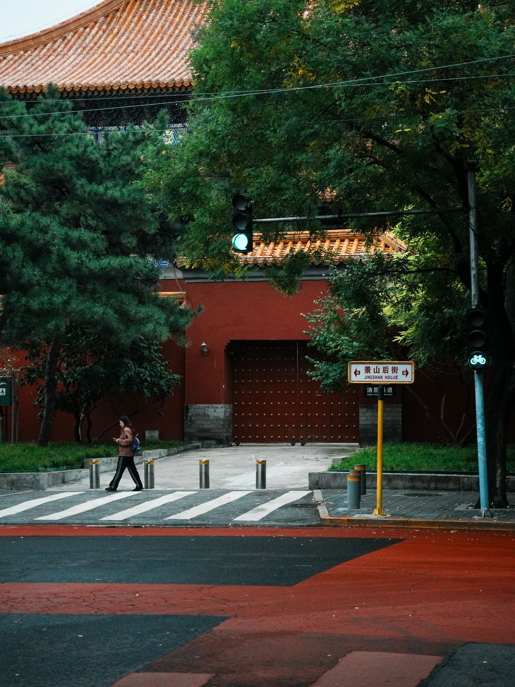
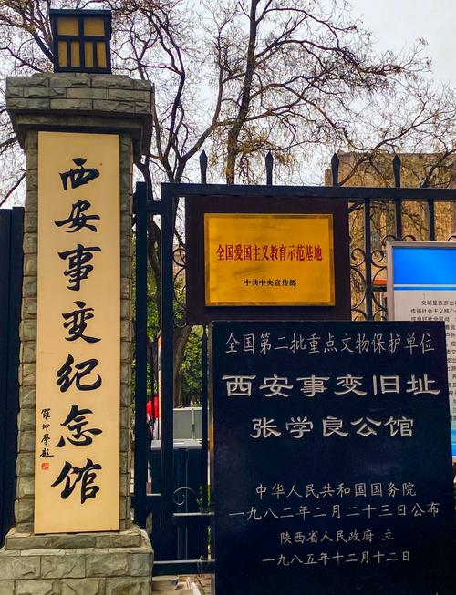
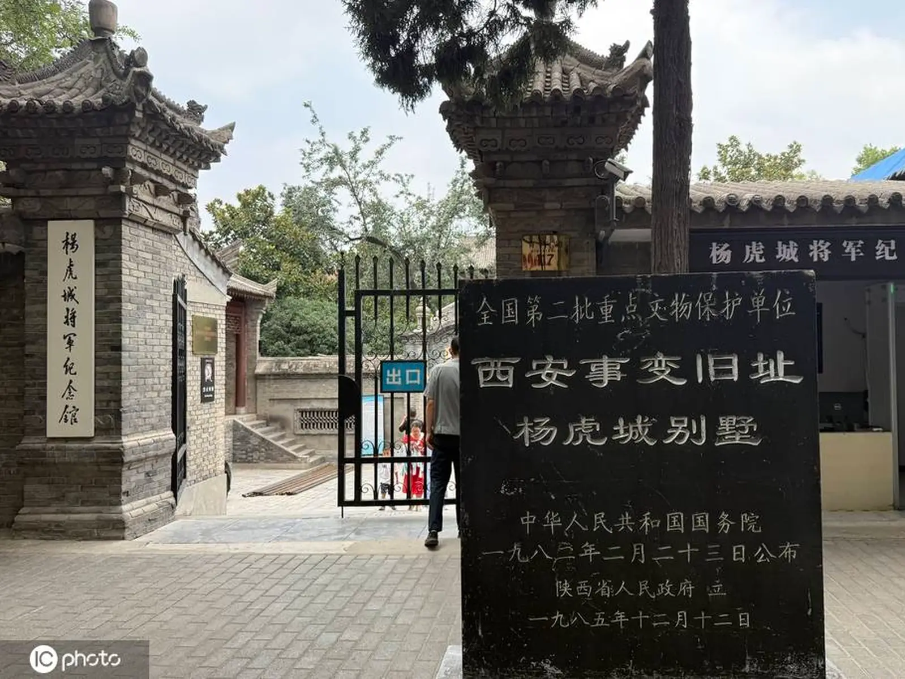
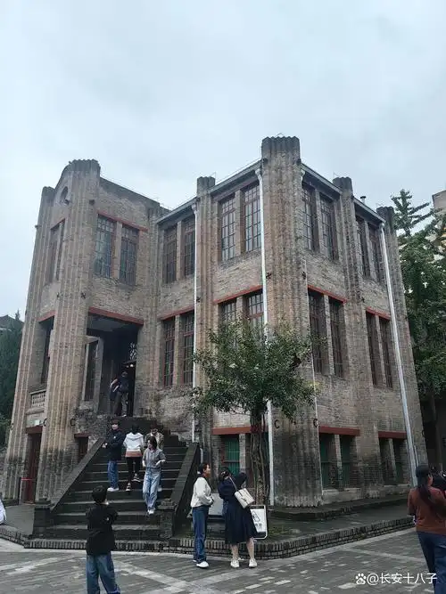
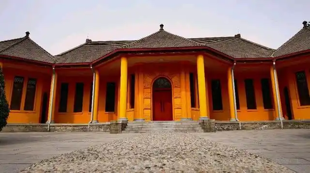
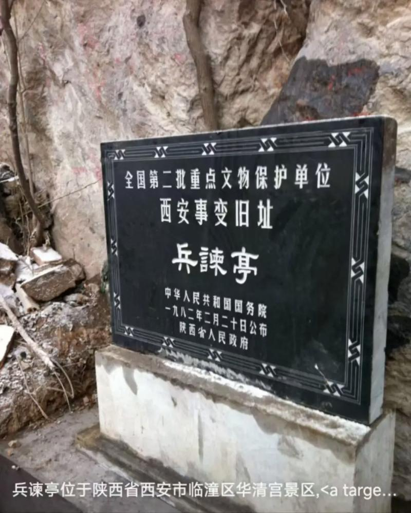

1936年12月12日凌晨，古城西安响起枪声。东北军将领张学良和十七路军总指挥杨虎城联合发动兵谏，在临潼华清池扣留了蒋介石，同时在西安城内控制了国民政府要员。这就是震惊中外的"西安事变"，又称"双十二事变"。这一事件直接促成了国共第二次合作，改变了中国抗日战争的格局，也深刻影响了20世纪中国乃至世界的历史走向。
西安事变旧址群主要包括：张学良将军公馆（建国路69号）、杨虎城将军止园别墅（青年路117号）、西安事变指挥部（新城黄楼）、以及位于临潼华清宫内的五间厅和骊山兵谏亭。

位于建国路69号的张学良公馆是西安事变最重要的纪念地。公馆建于1932年，为中西合璧式建筑，主楼三层。事变发生后，张学良在此召集东北军和十七路军高级将领商讨兵谏方案。蒋介石被押解回西安后一度被扣留于此。事变和平解决后，周恩来、秦邦宪、叶剑英等中共代表也在此与张学良、杨虎城和宋子文、宋美龄进行谈判。
公馆现为西安事变纪念馆，馆内陈列着大量珍贵的历史照片、文件和实物——包括张学良的手令、宋美龄致蒋介石的亲笔信、以及和平协议的原件等。三层的小楼静静地矗立在西安老街巷中，记录着那个决定性的冬日。
1936年的中国，日军已侵占东北五年，华北亦岌岌可危。蒋介石坚持"攘外必先安内"政策，调集大军围剿陕北红军，并亲赴西安督战。张学良的东北军和杨虎城的十七路军被部署在"剿共"前线，但两军将士抗日情绪日益高涨，对内战深感厌倦。张、杨多次向蒋"苦谏"停止内战一致抗日，均遭严词拒绝。
12月12日凌晨，张、杨发动兵谏。蒋介石在枪声中从华清池五间厅翻墙逃上骊山，藏身于一处石缝中，天亮后被搜山士兵发现。与此同时，在西安城内，杨虎城的部队控制了国民党在西安的军政机构。
事变发生后，中国共产党应张、杨之邀派周恩来等赴西安斡旋。经过紧张的谈判，蒋介石口头接受了"停止内战、联共抗日"等六项条件。12月25日，张学良亲送蒋介石返回南京（随即被扣押，从此被软禁长达半个多世纪）。西安事变的和平解决，为以国共合作为基础的抗日民族统一战线奠定了基础。
张学良晚年曾说："我的事情是到36岁，以后就没有了。从21岁到36岁，这就是我的生命。"西安事变彻底改变了他的人生轨迹。




| 地址 | 张学良公馆：西安市碑林区建国路69号；杨虎城止园：莲湖区青年路117号 |
|---|---|
| 开放时间 | 09:00 — 17:00（周一闭馆） |
| 门票 | 免费（凭身份证领票） |
| 交通 | 张学良公馆：地铁4号线大差市站C口出步行约10分钟 |
| 小贴士 | 纪念馆规模不大，1—1.5小时即可参观完毕；可结合建国路老街区漫步，感受民国时期西安的城市氛围 |